PHP
PHP tutorial for beginners and professionals provides in-depth knowledge of PHP scripting language.
Our PHP tutorial will help you to learn PHP scripting language easily.
Backward Skip 10sThis PHP tutorial covers all the topics of PHP such as introduction, control statements,
functions, array, string, file handling, form handling, regular expression, date and time, object-oriented
programming in PHP, math, PHP MySQL, PHP with Ajax, PHP with jQuery and PHP with XML.

What is PHP
PHP is an open-source, interpreted, and object-oriented scripting language that can be executed at the server-side.
PHP is well suited for web development. Therefore, it is used to develop web applications
(an application that executes on the server and generates the dynamic page.).
PHP was created by Rasmus Lerdorf in 1994 but appeared in the market in 1995.
PHP 7.4.0 is the latest version of PHP, which was released on 28 November.
Some important points need to be noticed about PHP are as followed:
1) PHP stands for Hypertext Preprocessor.
2) PHP is an interpreted language, i.e., there is no need for compilation.
3) PHP is faster than other scripting languages, for example, ASP and JSP.
4) PHP is a server-side scripting language, which is used to manage the dynamic content of the website.
5) PHP can be embedded into HTML.
6) PHP is an object-oriented language.
7) PHP is an open-source scripting language.
8) PHP is simple and easy to learn language.
PHP Data Types
PHP data types are used to hold different types of data or values.
PHP supports 8 primitive data types that can be categorized further in 3 types:
1) Scalar Types (predefined)
2) Compound Types (user-defined)
3) Special Types
PHP Data Types: Scalar Types
It holds only single value. There are 4 scalar data types in PHP.
1) boolean
Booleans are the simplest data type works like switch. It holds only two values: TRUE (1) or FALSE (0).
It is often used with conditional statements. If the condition is correct, it returns TRUE otherwise FALSE.
2) integer
Integer means numeric data with a negative or positive sign.
It holds only whole numbers, i.e., numbers without fractional part or decimal points.
Rules for integer:
* An integer can be either positive or negative.
* An integer must not contain decimal point.
* Integer can be decimal (base 10), octal (base 8), or hexadecimal (base 16).
* The range of an integer must be lie between 2,147,483,648 and 2,147,483,647 i.e., -2^31 to 2^31.
3) float
A floating-point number is a number with a decimal point. Unlike integer,
it can hold numbers with a fractional or decimal point, including a negative or positive sign.
4) string
A string is a non-numeric data type. It holds letters or any alphabets, numbers, and even special characters.
String values must be enclosed either within single quotes or in double quotes. But both are treated differently.
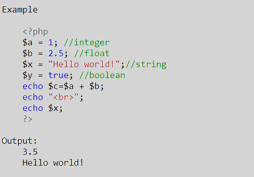
PHP Data Types: Compound Types
It can hold multiple values. There are 2 compound data types in PHP.
1) array
An array is a compound data type. It can store multiple values of same data type in a single variable.
2) object
Objects are the instances of user-defined classes that can store both values and functions.
They must be explicitly declared.
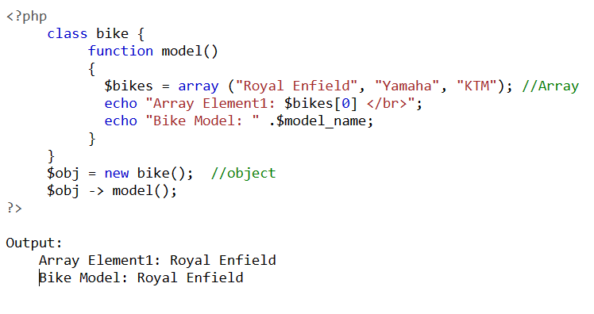
PHP Data Types: Special Types
There are 2 special data types in PHP.
1) resource
Resources are not the exact data type in PHP. Basically, these are used to store
some function calls or references to external PHP resources.
For example - a database call. It is an external resource.
2) NULL
Null is a special data type that has only one value: NULL.
There is a convention of writing it in capital letters as it is case sensitive.
The special type of data type NULL defined a variable with no value.
PHP Operators
PHP Operator is a symbol
i.e used to perform operations on operands. In simple words, operators are used to perform operations on variables or values.
For example:
$num=10+20; // + is the operator and 10,20 are operands
In the above example, + is the binary + operator, 10 and 20 are operands and $num is variable.
PHP Operators can be categorized in following forms:
1) Arithmetic Operators
2) Assignment Operators
3) Bitwise Operators
4) Comparison Operators
5) Incrementing/Decrementing Operators
6) Logical Operators
7) String Operators
8) Array Operators
9) Type Operators
10) Execution Operators
11) Error Control Operators
We can also categorize operators on behalf of operands. They can be categorized in 3 forms:
1) Unary Operators: works on single operands such as ++, -- etc.
2) Binary Operators: works on two operands such as binary +, -, *, / etc.
3) Ternary Operators: works on three operands such as "?:".
Arithmetic Operators
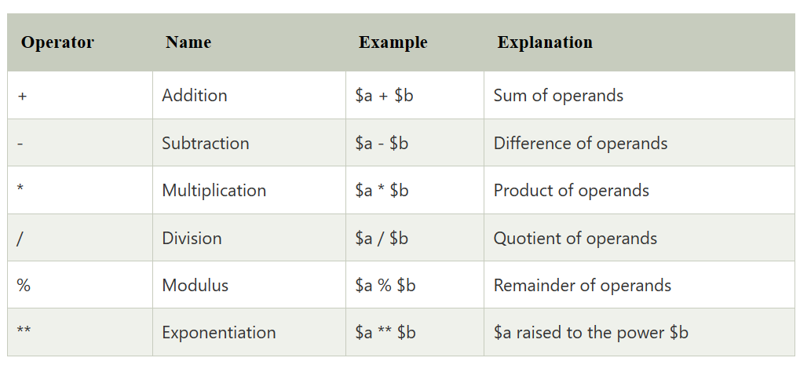
Assignment Operators
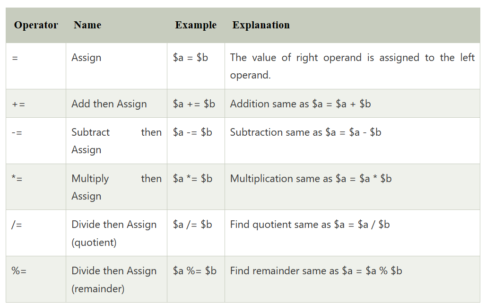
Bitwise Operators
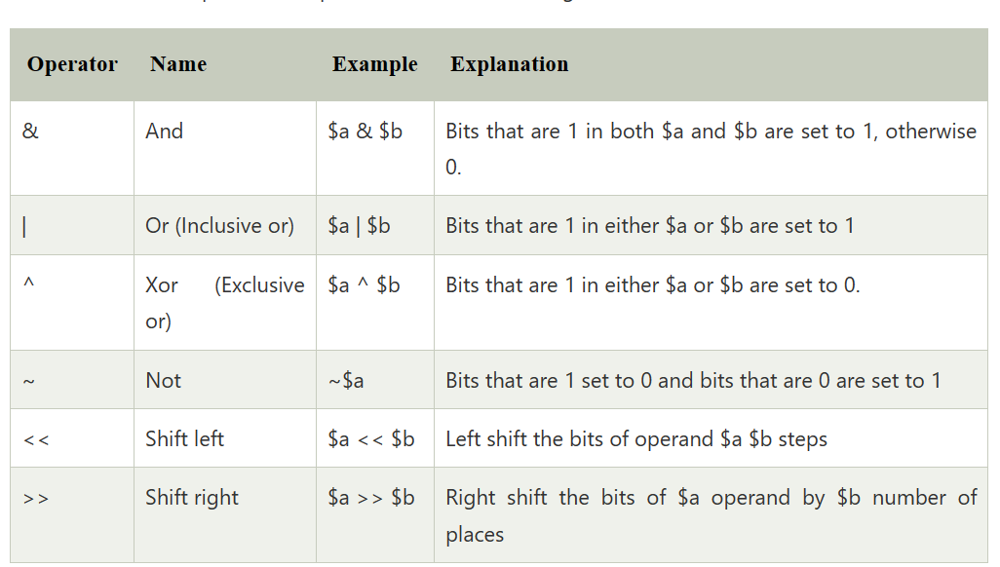
Comparison Operators
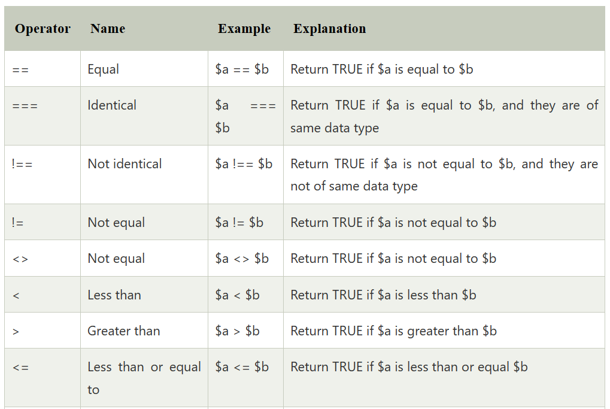
Incrementing/Decrementing Operators
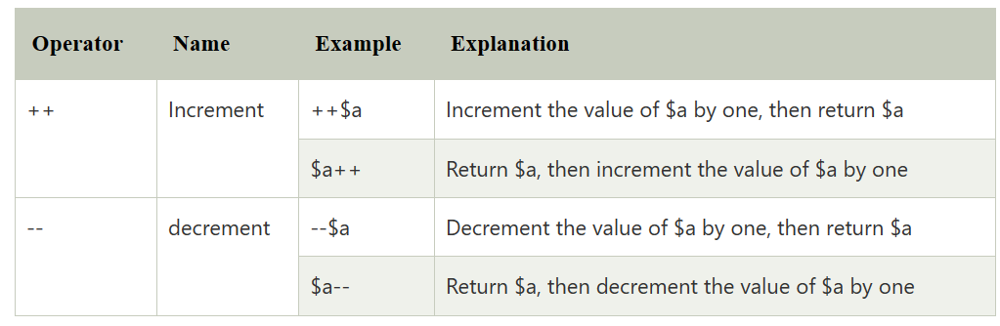
Logical Operators
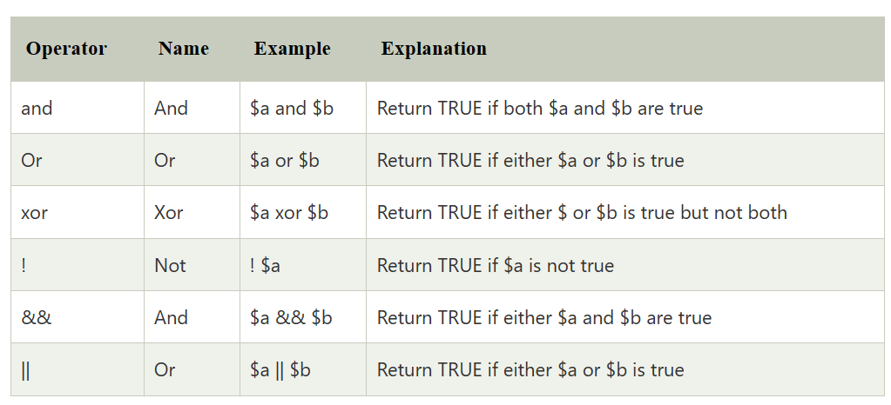
String Operators
Array Operators
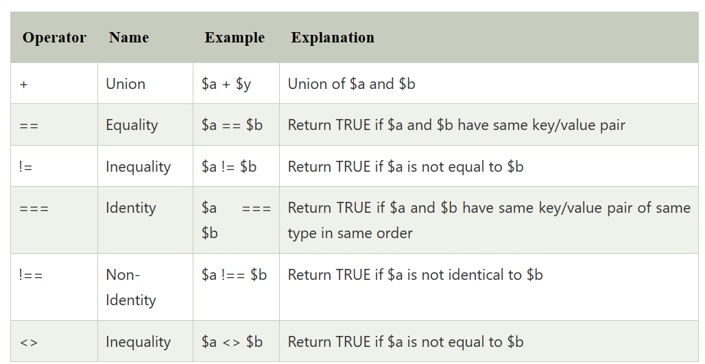
Execution Operators
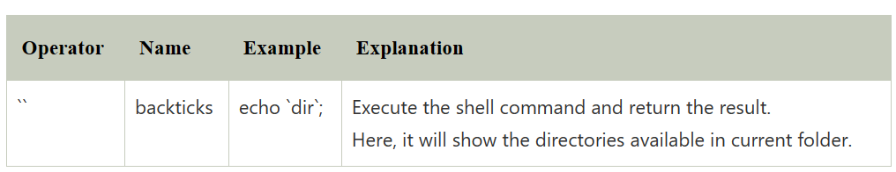
Error Control Operators
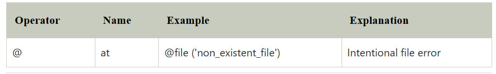
PHP Variables
In PHP, a variable is declared using a $ sign followed by the variable name.
Here, some important points to know about variables:
* As PHP is a loosely typed language, so we do not need to declare the data types of the variables.
* It automatically analyzes the values and makes conversions to its correct datatype.
* After declaring a variable, it can be reused throughout the code.
* Assignment Operator (=) is used to assign the value to a variable.
Syntax of declaring a variable in PHP is given below:
$variablename=value;
Rules for declaring PHP variable:
* A variable must start with a dollar ($) sign, followed by the variable name.
* It can only contain alpha-numeric character and underscore (A-z, 0-9, _).
* A variable name must start with a letter or underscore (_) character.
* A PHP variable name cannot contain spaces.
* One thing to be kept in mind that the variable name cannot start with a number or special symbols.
* PHP variables are case-sensitive, so $name and $NAME both are treated as different variable.